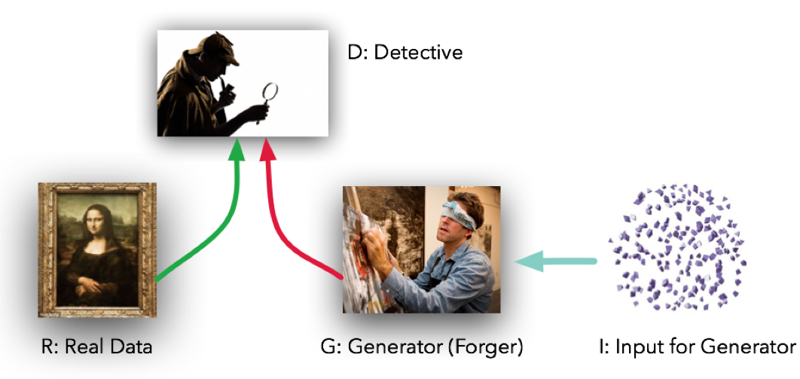
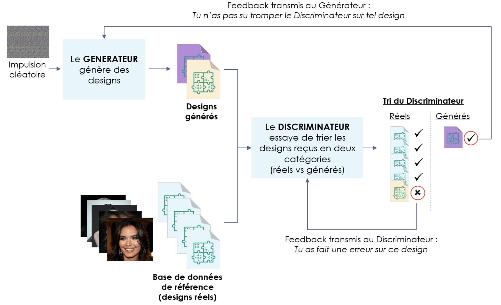
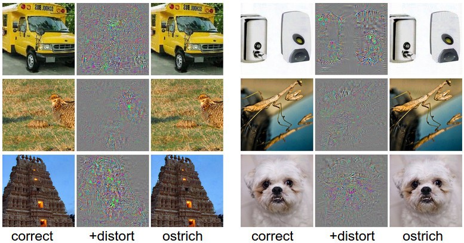

Reinforcement Learning : Théorie
Cet article présente les bases théoriques du Reinforcement Learning
“What I Cannot Create, I Do Not Understand”
Richard Feynman
Saliency Map : compréhension d'un concept
Une IA forte est-elle possible ?
Rappel et exemple concret
Rappelons un peu le principe de Reinforcement Learning entrevu dans l'introduction :
Dans l'apprentissage par renforcement, nous avons un environnement qui représente le monde extérieur
pour l'agent et un agent qui effectue des actions, reçoit des observations
de l'environnement qui consiste en une récompense pour son action et des informations
sur son nouvel état. Cette récompense informe l'agent du bien ou du mal de l'action entreprise,
et l'observation lui indique quel est son prochain état dans l'environnement.
L'agent tente de déterminer les actions optimales à entreprendre ou afin d'accomplir sa tâche
de la meilleure façon possible.
Cas concret Essayons de modéliser une situation réelle comme un problème de RL. Nous allons aborder le cas
d'un bébé qui apprend à marcher sous la forme d'un problème d'apprentissage par renforcement.
Dans ce problème, l'état final idéal, i.e l'état final qui permet au bébé d'être récompensé est : Le bébé commence
à marcher et arrive à atteindre une certaine position finale . Dans ce cas là, les parents sont tout contents ce qui
rend le bébé satisfait et joyeux, nous pouvons dire qu'il reçoit donc une récompense positive de valeur +1.
Le deuxième cas de figure est celui où le bébé n'arrive pas à atteindre la position désirée car il tombe en marchant.
Dans ce cas là, le bébé se fait mal et pleure : il reçoit donc une récompensé négative de valeur -1.
Quand le bébé tombera, il essaiera de comprendre ce qui l'a poussé à tomber et il essaiera d'éviter cette action au futur.
De même, s'il ne tombe pas, il essaiera de reproduire sa méthode pour les fois prochaines : C'est ainsi que nous humains
apprenons : par essai et erreur (trial and error). L'apprentissage par renforcement est conceptuellement le même,
il s'agit d'une approche computationnelle pour apprendre par l'action.
Notions et définitions
Nous avons évoqué des termes comme 'action' ou encore 'récompense'. Maintenant, nous allons mettre en place la formulation théorique d'un problème de RL et définir et définir en passant ce que veulent dire ces termes.
- Agent : entité hypothétique qui accomplit des actions dans un environnement dans le but d'obtenir une certaine récompense.
- Action(a) : Tous les mouvements possibles que l'agent peut prendre.
- Environnement (e) : Un scénario auquel l'agent doit faire face.
- État(s) : Situation actuelle retournée par l'environnement.
- Récompense (R) : Un retour immédiat de l'environnement pour évaluer la dernière action de l'agent.
- Stratégie(π) : La stratégie que l'agent utilise pour déterminer la prochaine action en fonction de l'état actuel.


